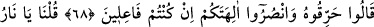
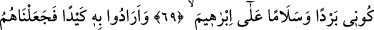
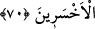

EY ATEŞ!
İBRÂHİM İÇİN
SERİNLİK VE ESENLİK OL!
68. (Bir kısmı:) “Eğer bir iş yapacaksanız, yakın onu da ilâhlarınıza yardım
edin!” dediler.
69. “Ey ateş! İbrahim için serinlik ve esenlik ol!” dedik.
70. Böylece ona bir tuzak kurmak istediler; fakat biz onları, daha çok hüsrana
uğrayanlar durumuna soktuk.
İbrâhim (a.s.)’a delil getirmekten âciz kalınca birbirlerine: “Eğer” onu helâk etmek
için “bir iş yapacaksanız, yakın onu da” ilahlarınız için intikam alarak “ilahlarınıza
yardım edin!” dediler.” Yâni, ilahlara yardım babında yapılabilecek en mûteber şey,
onu yakmaktır.
İşte bâtıl üzere olup delil ile susturulan kimsenin âdeti budur. Kesin delil ile şüphesi
ortadan kaldırılıp ayıbı ortaya dökülünce, düşmanca tavır takınmaktan başka sığınacak
yeri kalmaz. Onlar da İbrâhim (a.s.)’ı yakarak cezalandırma konusunda söz birliği
ettiler. Çünkü, yakmak cezâların en şiddetlisidir.
Hz. İbrahim’in yakılması kıssası şöyledir: Nemrud ve adamları onu yakmak için
toplandıklarında onu etrafı duvarlarla çevrili bir eve hapsettiler. Yüksekliği altmış
arşındı. Burası Irak’ta Kûsâ dağının yanında idi. Sonra onu yakmak için pek çok odun
topladılar. Hatta hasta kimseler bile odun satın alınıp, oraya konulmasını tavsiye
ediyordu. Hastalanan bir kadın, iyileşirse Hz. İbrahim’in ateşi için odun toplayacağını
söylüyordu. Bâzıları adakta bulunuyor, istediği olursa İbrahim’in atılacağı ateşe odun
taşıyacağını adıyordu. Kadınlar ip büküp onu satıyor, onunla odun alıyor, dinlerine
yardım olsun diye o odunları o binaya bırakıyorlardı.
İhtiyar bir kadın vardı. Hz. İbrahim’in atılacağı ateşe odun taşımayı nezretmişti.
Sırtına odun yüklenip ateşin yakılacağı yere yöneldi. Yolda bir melek karşısına çıktı ve:
“Ey ihtiyar kadın, nereye gidiyorsun?” dedi. Kadın: “İbrahim’in atılacağı ateşe
gidiyorum?” dedi. Bunun üzerine melek ona: “Allah yolunu uzaltsın, adımlarını
kısaltsın!” dedi. Kadın tekrar yola koyuldu. Kadın odun yükü başının üstünde aç ve